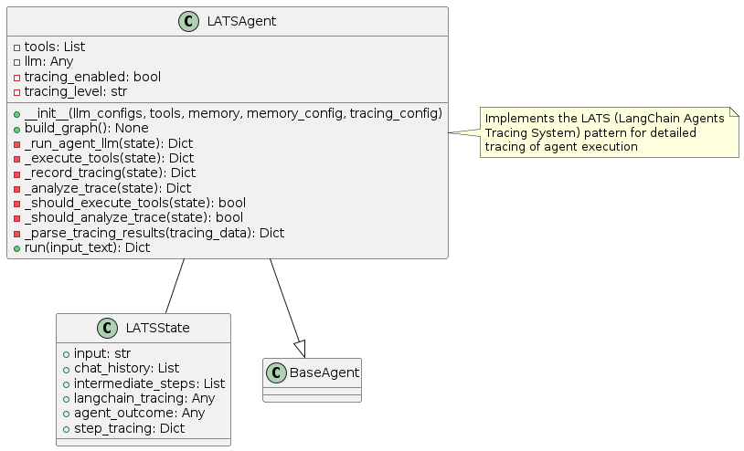
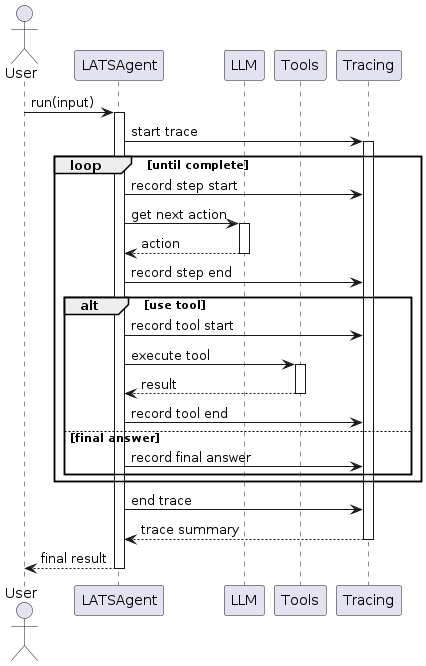
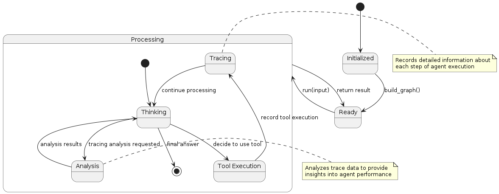

LATS (LangChain Agents Tracing System) Pattern
Overview
The LATS pattern integrates comprehensive tracing and monitoring capabilities into the agent execution flow. This pattern focuses on:
Detailed Tracing: Recording every step of agent execution with rich metadata
Performance Monitoring: Tracking metrics like response time, token usage, and success rates
Debugging Support: Providing detailed information for troubleshooting
Analysis Tools: Offering insights into agent behavior and performance
The key innovation of this pattern is its focus on observability, making agent behavior more transparent and analyzable.
Diagrams
Class Structure

The LATS pattern is implemented through:
LATSState: Extends the basic agent state with tracing information
LATSAgent: Implements the agent logic with integrated tracing capabilities
BaseAgent: The abstract base class from which the LATS agent inherits
Execution Flow

The execution flow follows:
User provides input to the LATSAgent
The agent starts a trace for the current execution
Each step of reasoning or tool execution is recorded:
The agent records the start of each step
The step is executed
The agent records the end of the step with results
Analysis can be performed on trace data during or after execution
Final result is returned to the user along with trace summary
State Transitions

The LATS pattern transitions through these states:
Initialized: Agent is created but not yet ready
Ready: Agent is ready to process input
Processing: Agent is actively working on the task
Thinking: Agent is reasoning about what to do next
Tool Execution: Agent is using a tool
Tracing: Agent is recording trace information
Analysis: Agent is analyzing trace data
Final state is reached when the agent determines a final answer
Use Cases
Agent Debugging: For identifying issues in agent reasoning or tool usage
Performance Optimization: When monitoring and improving agent efficiency
Compliance Requirements: For systems that need audit trails of agent activities
User Explanation: To provide transparency into how answers were derived
Research Applications: For studying agent behavior and improving algorithms
Multi-Agent Systems: For coordinating and analyzing interactions between agents
Implementation Guide
Here’s a simple example of using the LATSAgent:
from agent_patterns.patterns import LATSAgent
from agent_patterns.core.tools import ToolRegistry
from agent_patterns.core.memory import CompositeMemory, EpisodicMemory
from langchain.tools import tool
# Define a simple tool
@tool
def search(query: str) -> str:
"""Search for information about a topic."""
return f"Results for {query}: Some relevant information..."
# Create tool registry
tool_registry = ToolRegistry([search])
# Create memory system
memory = CompositeMemory({
"episodic": EpisodicMemory(), # For storing trace histories
})
# Configure the LLMs
llm_configs = {
"default": {
"provider": "openai",
"model": "gpt-4o",
"temperature": 0.7
}
}
# Configure tracing
tracing_config = {
"enabled": True,
"level": "detailed", # Options: basic, detailed, comprehensive
"persist": True, # Store traces in memory
"metrics": ["tokens", "latency", "tool_usage"]
}
# Initialize the LATS agent
agent = LATSAgent(
llm_configs=llm_configs,
tool_provider=tool_registry,
memory=memory,
tracing_config=tracing_config
)
# Run the agent
result = agent.run("What is the capital of France?")
print(result)
# Retrieve and analyze trace
trace = agent.get_last_trace()
print(f"Execution took {trace['duration']} seconds")
print(f"Used {trace['token_count']} tokens")
print(f"Tool usage: {trace['tool_usage']}")
Example References
The examples directory contains implementations of the LATS pattern:
examples/lats_basic.py: Basic implementation with tracingexamples/lats_analysis.py: Advanced implementation with trace analysis
Best Practices
Set appropriate tracing levels based on needs (development vs. production)
Implement trace sampling for high-volume applications
Create visualizations of trace data for easier analysis
Establish alerting based on trace metrics (e.g., for slow responses)
Store traces in a structured format for easier querying
Implement privacy controls to manage sensitive information in traces
Use traces to identify opportunities for agent optimization